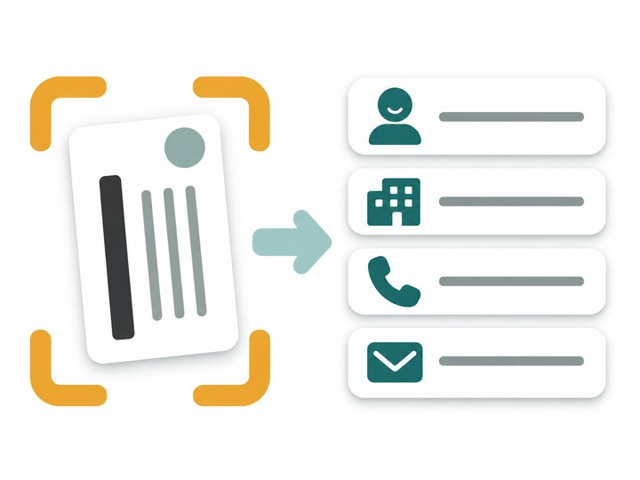

iPhone・iPad・Android の名刺アプリ
名刺は、端末の中で読む。
どこにも送らない。
名刺を撮ると、端末の中で読み取って項目に分けます。縦書きの名刺も英語の名刺も。確かめて直してから、連絡先に入れられます。名刺は名刺帳に、会った日と場所といっしょに残ります。広告も登録も通信もありません。
App Store・Google Play で配信予定買い切りで全部の機能が使えます。アプリ内課金・サブスクリプション・広告はありません。

こんな困りごとのために
名刺の情報を会社に預けたくない
おみしりは通信をしません。名刺の画像も中身も、端末の中（とあなたの iCloud の控え）だけにあります。
月額の支払いが続く
買い切りで全部の機能が使えます。人数や枚数の上限もありません。
読み間違いが多い
項目を押すと、名刺のどこから読んだかを囲んで見せます。その場で直せて、分けられなかった行も残ります。
縦書きの名刺が読めない
縦書きの名刺も、英語の名刺も読みます。郵便番号からは住所の候補も出します。
更新や機種変更で消えた
毎日の控えを iCloud Drive に置きます（30日・どの日にも戻せます）。控えのファイル・CSV・vCard でも書き出せます。
あとで探せない
会社でまとめ、名前・ふりがな・タグ・会った場所・メモで探せます。会った日も残ります。
できること
| 撮る | 四隅を見つけて傾きを直す・続けて何枚も・裏も・写真から（何枚も写った1枚も） |
|---|---|
| 読む | 端末の中で・縦書きと英語も・名前・会社・部署・役職・電話・携帯・FAX・メール・URL・郵便番号・住所 |
| 確かめる | 読んだ場所を囲んで見せる・直す・そのほかの行を項目に・郵便番号から住所の候補 |
| 連絡先 | iPhone の連絡先に入れる・名刺の画像を写真に・同じ人がいれば新しくするか別に入れる |
| 名刺帳 | 会社でまとめる・検索・会った日・場所・メモ・タグ・CSV（UTF-8・Shift_JIS）と vCard |
| データ | 登録・通信なし・iCloud Drive に毎日の控え 30日・控えのファイル・ゴミ箱 |
郵便番号のデータは、日本郵便が公開している郵便番号データ（日本郵便は郵便番号データの著作権を主張していません）をもとにしています。使い方・プライバシーポリシー・利用規約もご覧ください。